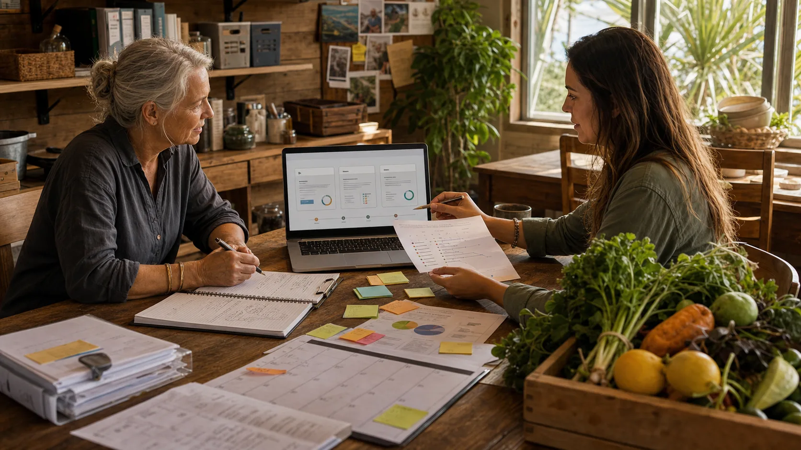

Good headline
"Shared Table turns local food into resilience before the next shock."
Partner and media
Partners, media and supporters should hear the same grounded story as participants: fuel and freight pressure make local food capacity matter, and trust is built through daily practice.
Draft partner note
The Straddie Shared Table is a practical community food-resilience pathway for Minjerribah / North Stradbroke Island. The first goal is modest and useful: coordinate local growing, surplus rescue, preserving, flexible meal timing, safe preparation and private group notices in a way that builds trust and reduces waste.
Supporters can help with venues, kitchens, containers, transport, freezer space, preserving equipment, food-safety review, printing, facilitation and careful public communication. The public story should stay honest about what is already happening and what still needs permission.

Draft media angle
Keep the media frame human and grounded: fuel-pressure resilience, local surplus, safe sharing, practical civic infrastructure and careful collaboration. Avoid claiming formal support, lab relationships, government approval or cultural authority unless those relationships are real and documented.
"Shared Table turns local food into resilience before the next shock."
"The aim is to start small, check everything carefully and learn before scaling."
Do not present the project as launched, funded, endorsed or operational until it is.